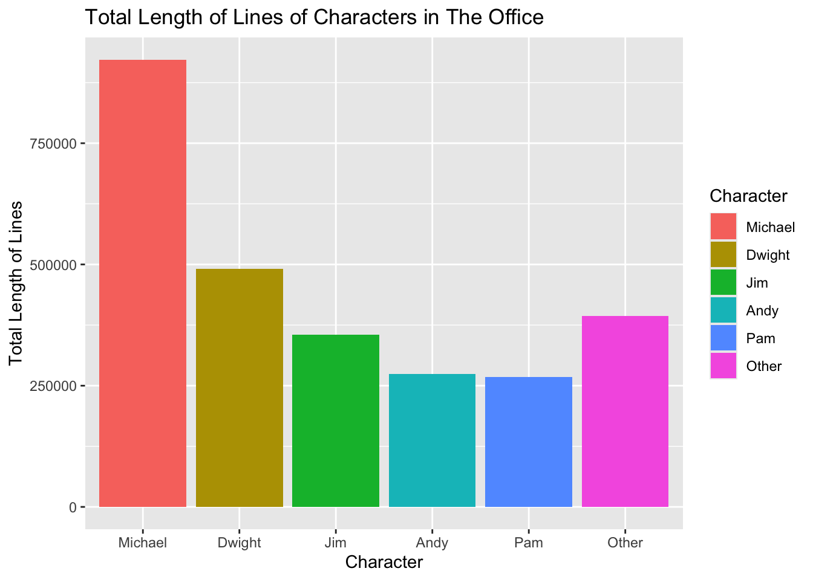
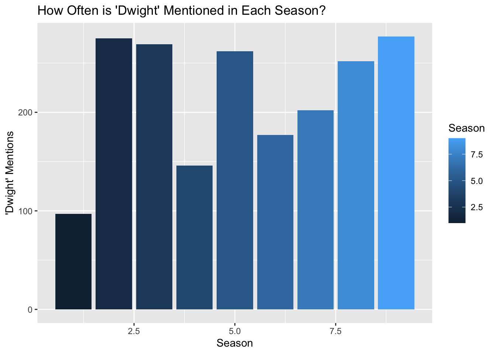

library(tidyverse)
library(ggplot2)
office_lines <- read.csv("the-office_lines.csv")The Office Quotes
This data set has information on all of the lines spoken in the American sitcom show, The Office. The data set tracks all lines from all 9 seasons and includes the season, episode, line, character who spoke the line, and what number line it was in the entire show. In total there are 61,306 lines!
This dataset has been created by Kaggle and was originally scraped from a website called Office Quotes that is currently down.
- The code below gives you a ranking of each character, calculating the length of lines for each character from The Office. I calculated the length of each line for each character and the summed up the length of all of their lines.
office_lines_changed <- office_lines |>
group_by(Character) |>
mutate(line_length = str_length(Line))|>
summarize(total_length = sum(line_length, na.rm = TRUE)) |>
arrange(desc(total_length)) |>
head(10)- One of the most common phrases that is repeated in The Office is “That’s what she said.” The main character Michael often repeats this innapropriate joke and I wanted to count how many times this joke was repeated by each character. First I found it helpful to change each string to all lower case and then use a regular expression brackets to choose either a straight or curly apostrophe.
office_lines |>
mutate(Line = str_to_lower(Line))|>
group_by(Character) |>
summarize(exclaim_counter = sum(str_count(Line, "that['’]s what she said")))|>
arrange(desc(exclaim_counter))# A tibble: 780 × 2
Character exclaim_counter
<chr> <int>
1 Michael 22
2 Dwight 3
3 Pam 3
4 Jim 2
5 Creed 1
6 David 1
7 Everyone 1
8 Holly 1
9 Jan 1
10 Stanley 1
# ℹ 770 more rows- In The Office, the paper company the characters all work for is called “Dunder Mifflin” which sounds an awful lot like “Blunder Muffin” to me. What is we changed the company line to something more funny?
office_lines |>
mutate(new_company = str_replace_all(Line, "Dunder Mifflin", "Blunder Muffin")) |>
filter(str_detect(new_company, "Blunder Muffin")) |>
select(new_company) |>
head(2) new_company
1 [on the phone] Yes, I’d like to speak to your office manager, please. Yes, hello. This is Michael Scott. I am the Regional Manager of Blunder Muffin Paper Products. Just wanted to talk to you manager-a-manger. [quick cut scene] All right. Done deal. Thank you very much, sir. You’re a gentleman and a scholar. Oh, I’m sorry. OK. I’m sorry. My mistake. [hangs up] That was a woman I was talking to, so… She had a very low voice. Probably a smoker, so… [Clears throat] So that’s the way it’s done.
2 I’ve, uh, I’ve been at Blunder Muffin for 12 years, the last four as Regional Manager. If you want to come through here… See we have the entire floor. So this is my kingdom, as far as the eye can see. This is our receptionist, Pam. Pam! Pam-Pam! Pam Beesly. Pam has been with us for… forever. Right, Pam?- One of my favorite characters is Dwight Schrute. He is known as one of the most comedic characters in the show. Using lookarounds, I wrote code to see what the characters talk about when he is mentioned. Some examples are shown below.
office_lines |>
mutate(jim_string = (str_extract(Line, "(?<=Dwight )[^.?]+"))) |>
na.omit() |>
select(jim_string)|>
head(4) jim_string
94 begins smashing pencils with his phone] This is why the whole downsizing thing just doesn’t bother me
139 Schrute in the building
142 Schrute, Assistant Regional Manager
143 tell him about the kung fu and the car and everything- The great love story of the sitcom is the story of Jim and Pam. In this code I used str_detect to count how many times they are mentioned together in a line.
office_lines |>
summarize(jam_count = sum(str_detect(Line, "Jim.+Pam"), na.rm = TRUE)) jam_count
1 147office_lines_changed <- office_lines_changed |>
mutate(Character = fct_lump(Character, n = 5, w = total_length))
office_lines_changed <- office_lines_changed |>
mutate(Character = fct_reorder(Character, total_length, .desc = TRUE))
ggplot(office_lines_changed, aes(x = Character, y = total_length, fill = Character))+
geom_col() +
labs(
y = "Total Length of Lines",
title = "Total Length of Lines of Characters in The Office"
)
- PLOT 1: Length of Lines of Characters in The Office If you wanted to see how big of a role each character has in The Office throughout all 9 seasons, one way to track this could be to calculate the length of their lines. This plot above calculates the total length of all of each characters lines in terms of the physical length of each word in their lines. From this plot we can see that Michael, the main character, speaks the most. I was surprised to see that Andy spoke more than Pam because I always thought Pam was one of the more prevelant characters in the show. The pink other column represents all of the other characters in the show who had smaller roles. Some of those characters include Kevin, Angela, Phyllis, and more.
office_lines_dwight <- office_lines |>
group_by(Season) |>
summarize(dwight_string = sum(str_detect(Line, "Dwight")))
ggplot(office_lines_dwight, aes(x = Season, y = dwight_string, fill = Season))+
geom_col()+
labs(
y = "'Dwight' Mentions",
title = "How Often is 'Dwight' Mentioned in Each Season?"
)
- PLOT 2: How Often is Dwight Mentioned in Each Season?
Using concept of tracking the times Dwight is mentioned in the Office, I plotted how many times Dwight is mentioned in each season. This gives us insight to how often the other characters talk about Dwight each season. With this data we can see that generally over time his popularity in the show increases. Although in season 2 and 3 Dwight is mentioned a lot more than in Season 4, 6, and 7. It would be interested to compare the data of all of the other characters and see which seasons highlight individual plots for each character. Maybe Dwight is mentioned less in Season 4 because Jim and Pam start dating then and are mentioned more by other characters.